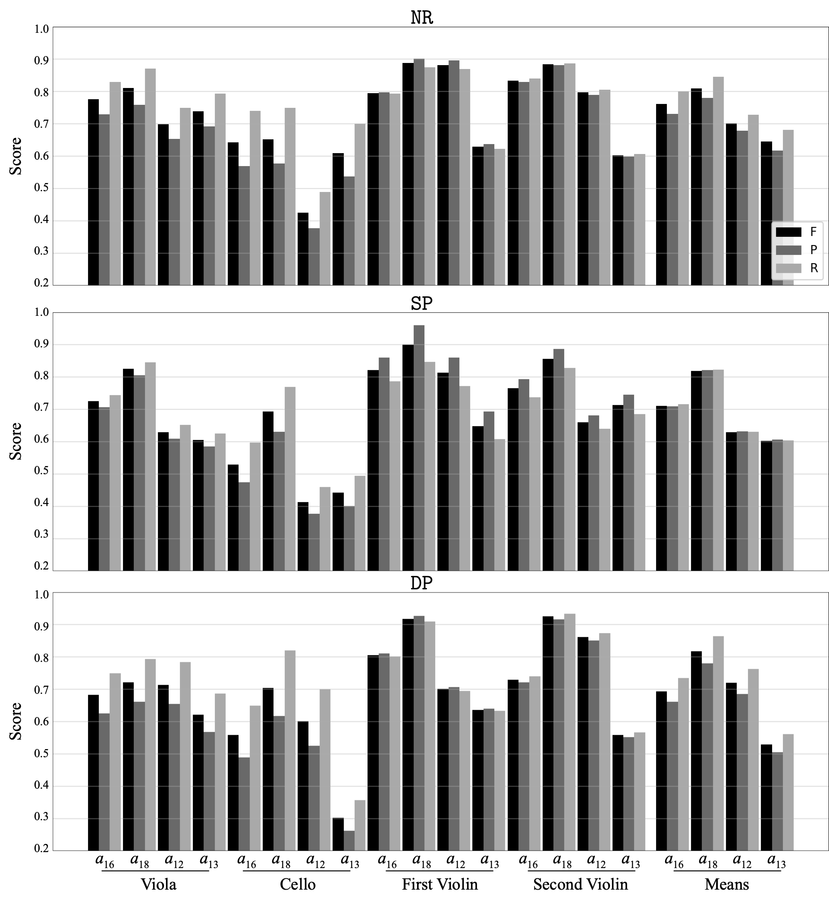

Inter-annotator Agreements for All Participants
Viola - 24 Annotators
Pairwise agreements between 24 annotators using F-measure score sorted by years of musical experience.
20ms Tolerance Window
70ms Tolerance Window
Cello - 24 Annotators
Pairwise agreements between 24 annotators using F-measure score sorted by years of musical experience.

20ms Tolerance Window

70ms Tolerance Window
First Violin - 24 Annotators
Pairwise agreements between 24 annotators using F-measure score sorted by years of musical experience.
20ms Tolerance Window
70ms Tolerance Window
Second Violin - 24 Annotators
Pairwise agreements between 24 annotators using F-measure score sorted by years of musical experience.
20ms Tolerance Window
70ms Tolerance Window
Inter-annotator Agreements for a Subset of Participants
Viola - 16 Annotators
Pairwise F-measure agreements between 16 annotators with 5 or more years of musical experience.
20ms Tolerance Window

70ms Tolerance Window
Cello - 16 Annotators
Pairwise F-measure agreements between 16 annotators with 5 or more years of musical experience.

20ms Tolerance Window

70ms Tolerance Window
First Violin - 16 Annotators
Pairwise F-measure agreements between 16 annotators with 5 or more years of musical experience.
20ms Tolerance Window

70ms Tolerance Window
Second Violin - 16 Annotators
Pairwise agreements between 24 annotators using F-measure score sorted by years of musical experience.

20ms Tolerance Window
70ms Tolerance Window
Inter-annotator Performance

Figure 1. True positive rates per participant compared to ground truth expert annotations α_0 in NR12.
Figure 1 shows the performance of each annotator α calculated as percentage of TP onsets per instrument and onset category when compared to the expert annotations α_0 (i.e., here considered ground truth). The reported results use tolerance window size of 25 ms and are presented for every annotation participant. The highest mean accuracy of 98%, 97% and 96% for all onset types is observed in annotators α_2, α_20 and α_23, respectively. The highest accuracy from α_2 was expected as that was the annotator with annotations closest to the average timing differences calculated from ACOs and was used as the basis for the expert annotations. Mean accuracies across all participants for the open and fingered string onsets as well as bow and finger type onsets are 83.0%, 81.3%, 83.9% and 70.8%, respectively. Overall, the finger type onsets which are played in succession after each bow onset represent the most difficult onset type to annotate. Additionally, the lowest mean performance across onset types and instruments can be seen in annotators α_7, α_8, α_9 and α_17. The mean annotation performance per instrument from the lowest performing annotators indicates that VN2 was the hardest to annotate with 30.9% accuracy and the remaining 30.9%, 34.7% and 39.6% for VN1, VC and VA, respectively. Since the difference from other instruments is not significant, the difficulty in annotating the second violin can be linked to the fast passages in bars 35 and 37 of the Haydn excerpt. This indicates that fast performances might be more challenging to annotate for inexperienced annotators than any given instrument in the string quartet. Alternatively, given the relatively small tolerance window there seems to be strong annotation agreement for all onset types except the finger onset type, which can be predominantly characterised through pitch information changes rather than visible changes of the transients.
Onset Detection Results For Each Instrument

Figure 2. Onset detection results as a correspondence between the onsets detected by the algorithms and compared against annotations from the annotators α_{12,13,16,18,0}.
Results are reported for five algorithms using annotations from NR, SP and DP conditions as well as, expert annotations α_0 from NR12. The overall highest performing algorithms for all instruments are CNN and CoF. The highest precision is achieved by CNN system (0.93) on the VN1 recordings with NR12 expert annotations. In the NR, SP and DP conditions the highest precision is achieved for VC, VN2 and VC by CNN (0.8), CoF (0.8), and CNN (0.83), respectively.
Onset Detection Results For Each Participant
Figure 3. Mean F-measure, precision and recall for CNN method calculated for each annotator and instrument.
Related Links
Related work.
BibTeX
@article{